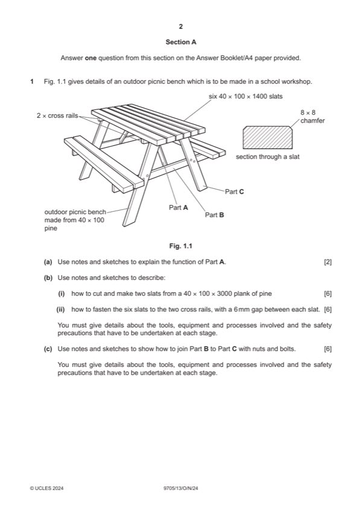

Question 1

Original paper page 2
Part 1(a) — solution
Exemplar answer: 2
Part A is a brace [1] to make the picnic bench more rigid. [1] 0–2
Mark points
- Include the ideas shown in the solution above.
Part 1(b)(i) — solution
Notes and/or sketches show: 6 Chamfers to be included for full marks on
Process of cutting the slats to length and preparing to the required profile [0– process.
3]
Tools and equipment for cutting the slats from the plank e.g. pencil try square,
rule, crosscut saw, radial arm saw and then preparing a slat to the required
profile e.g. marking gauge, jack plane [0–2]
Safety precaution when working with timber e.g. wear eye protection when
using a radial arm saw, work securely held in a vice when planing [0–1]
0–6
Mark points
- Include the ideas shown in the solution above.
Part 1(b)(ii) — solution
Notes and/or sketches show: 6
Process of spacing out & fastening the slats to the cross rails [0–3]
Tools and equipment for setting out the slats on the cross rail, pencil, try
square, rule, jig, spacers and then for fastening the slats to the cross rail e.g.
drill, drill bit, screwdriver [0–2]
Safety precaution when working with timber e.g. wear eye protection when
using a drill [0–1] 0–6
Mark points
- Include the ideas shown in the solution above.
Part 1(c) — solution
Notes and/or sketches show: 6 Only award the maximum mark of 3 marks
Process of drilling the holes and assembling the parts with nuts and bolts [0– for the process if it is clear how the holes
3] are aligned.
Tools and equipment for marking out the holes, pencil, try square, rule and
then for drilling the holes and assembling e.g. drill, drill bit, spanner [0–2]
Safety precaution when drilling the holes e.g. wear eye protection when using
a drill, make sure work is securely held [0–1]
University Press & Assessment 2024 Page 4 of 16
9705/13 Cambridge International AS & A Level – Mark Scheme October/November 2024
Guidance
Mark points
- Include the ideas shown in the solution above.